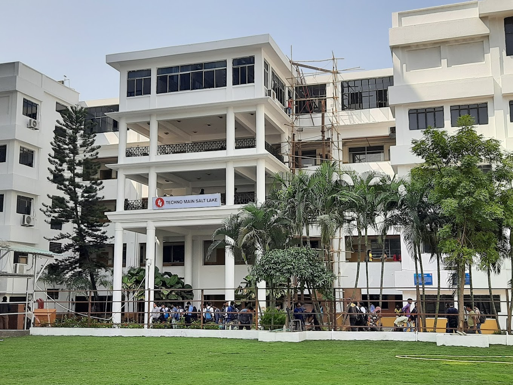
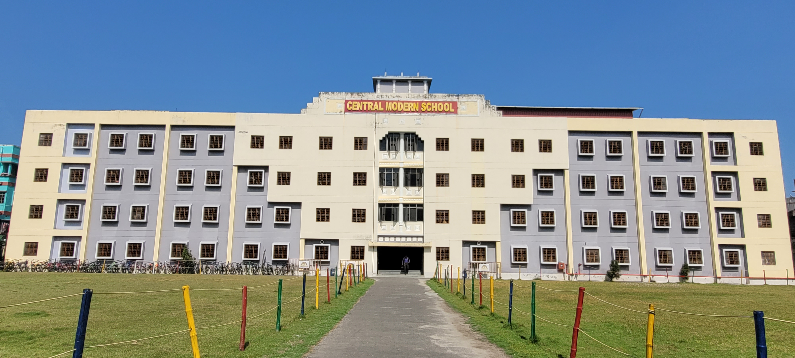

July–October01
IDEAS · Indian Statistical Institute, Kolkata
Internship completedResearch · Engineering · Applied AI
M.Tech scholar in Computer Science at IIT Kharagpur
Building practical machine learning systems.
Where research meets engineering, mathematics learn to compute, and ideas evolve into technologies that shape tomorrow.
I work at the intersection of machine learning research and software engineering, turning mathematical ideas into thoughtful, useful systems.
01 / Milestones
July–October01
IDEAS · Indian Statistical Institute, Kolkata
Internship completedMarch02
Graduate Aptitude Test in Engineering
GATE qualifiedJune–July03
Electronics and Communication Sciences Unit · ISI Kolkata
Programme completedJuly04
Tenth Summer School · Team project recognition
Special MentionMarch05
Graduate Aptitude Test in Engineering
GATE qualifiedApril–May06
IISc · Four IITs · ISI Kolkata
Shortlisted07
Indian Institute of Technology Kharagpur
Admitted · IIT KharagpurNov–Dec08
SEAL · @IIT Kharagpur
ShortlistedNov–Dec09
Chosen programme · Registration confirmed02 / Background
2026 — Present

2022 — 2026

2008 — 2026
02 / Selected work
Computer Vision
A computer vision project exploring visual analysis for agriculture.
Read project notes
Applied AI
A comparative analysis of GAN architectures for image synthesis.
Read project notes
Applied AI
A recommendation systems project focused on movie discovery.
Read project notesSystems
A command-line project exploring core systems concepts.
Read project notesSystems
A weather-focused application with a data-driven interface.
Read project notes03 / Learning
Selected certifications and academic achievements.
Indian Statistical Institute, Kolkata · 2025
Comparative GAN analysis · ISI Kolkata · 2025
IDEAS-TIH, ISI Kolkata · 3 months · ~120 hours
NPTEL Elite · Jul–Oct 2025 · 69%
Class IX · 2018 · Rank 3 · Grade A
04 / Toolkit
06 / Inquiry
Seminar at IIT Kharagpur
This report explores how mathematical models can represent real-world fair-division problems. It examines utility matrices, valuation distances, and two-dimensional mapping techniques to analyze allocation instances. The study focuses on Multidimensional Scaling (MDS) and explicit maps based on singular values, using real-world and synthetic datasets to explore patterns in resource allocation.
B.Tech Final Year Research Project
Developed a research-oriented hybrid recommender combining DistilBERT, Neural Collaborative Filtering (NCF), SVD, and LightGBM to address recommendation accuracy, cold-start, and data-sparsity challenges. Evaluated the approach with RMSE, Precision, Recall, and F1-Score against individual recommendation models.
ISI Summer School
Conducted a comparative study of Vanilla GAN, WGAN, and WGAN-GP during the ISI Kolkata Summer School. Evaluated the architectures on benchmark image datasets, examining training stability, convergence, mode collapse, gradient penalties, and image-generation quality.
07 / Get in touch
I’m glad to hear from researchers, engineers, students, and curious minds. Send a note about a project, opportunity, or question and I’ll get back to you.